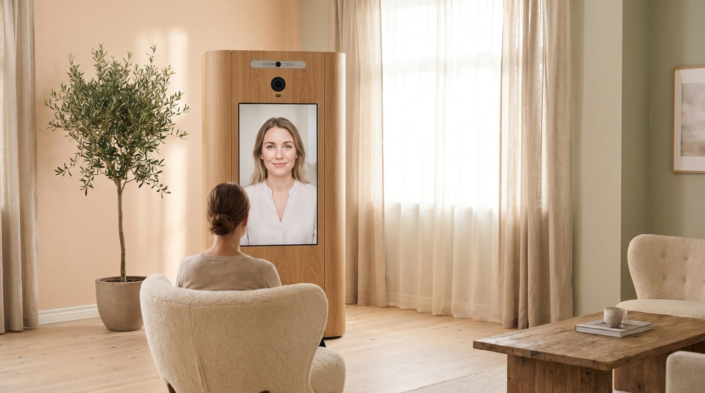
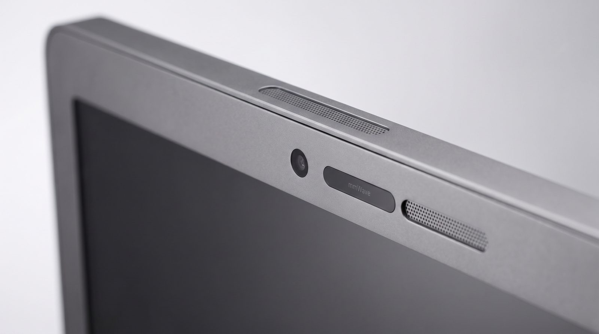
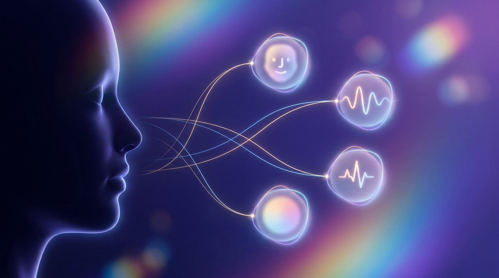
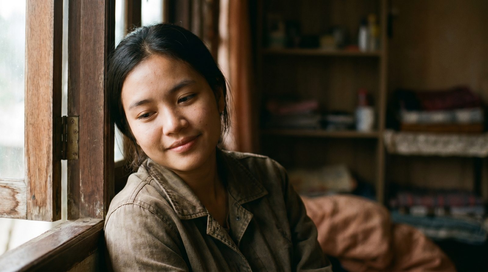

From Facial Expression to Mind-Reading — a contactless multimodal AI kiosk that lets a person sit down and be screened for depression in minutes, with no operator and no wearables.
PHQ-9 captures just what a person chooses to disclose at one moment — recall bias and social desirability hide the rest.
People — especially in Thai culture — smile to hide distress, so facial reading alone is unreliable.
Too few clinicians, long waits, and the discomfort of asking for help mean many are never screened at all.
MINDS is a self-service kiosk in a clinic. A person sits, talks with a warm AI doctor for 5–10 minutes, and the system silently reads multiple channels — then hands a clinician a clear summary.



Camera senses a person; the screen wakes.
Agree, pick language, enter basic info.
UI guides seating so face & radar lock in.
~5 AI questions; signals captured silently.
Summary to clinician; risk → instant alert + hotline.
Handled edge cases: noisy rooms (pre-session noise check + directional mic), multiple people, mid-session exit, accessibility, and shared-device privacy.
Thai people often smile to mask emotion. MINDS down-weights the facial channel and anchors its read on voice tone and language — flagging when a smile may be hiding sadness. This cultural calibration is the core research contribution.

Heart, breathing & temperature with no touch and no wearable.
Detects, guides, screens and resets — with no operator.
The masked-smile problem handled explicitly in the model.
Extends the funded mmWave + T2DM-remission framework into a deployable station.
Deploy in a clinic; validate against PHQ-9 + clinician rating; report feasibility & acceptability.
Swap webcam rPPG for the mmWave radar; time-sync every channel inside the box.
IRB approval, consent on a shared device, on-box vs. cloud data governance.
MINDS — From Facial Expression to Mind-Reading. A calmer, kinder front door to mental-health care.